웹디자인기능사 (2009-03-29 기출문제)
1과목: 디자인 일반
1. 다음 중 실내 공간을 목적별로 분류한 대상이 아닌 것은?
- 생활 공간 (living space)
- 가구 공간 (furniture space)
- 공공 공간 (public space)
- 작업 공간 (work space)
(정답률: 80%)

2. 다음 그림에서 느껴지는 착시현상으로 가장 옳은 것은?
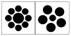
- 수평·수직의 착시
- 상·하 방향 과대 착시
- 면적의 착시
- 대비의 착시
(정답률: 56%)
3. 다음 ( ) 안에 들어갈 알맞은 용어는?
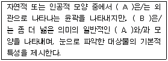
- A : 점, B : 형
- A : 선, B : 형태
- A : 형, B : 면
- A : 형, B : 형태
(정답률: 83%)
4. 다음이 설명하고 있는 형태는?
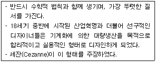
- 유기적 형태
- 기하학적 형태
- 윤곽형 형태
- 추상적 형태
(정답률: 84%)
5. 다음 중 실용성과 효용성에 관련되는 디자인의 조건으로 가장 적합한 것은?
- 독창성
- 심미성
- 경제성
- 합목적성
(정답률: 89%)
6. 따뜻한 색채는 차가운 색채와 함께 있을 때 더욱 따뜻하게 느껴지고, 차가운 색채도 따뜻한 색채와 함께 있을 때 더욱 호소력이 강해지는 색의 대비로 옳은 것은?
- 명도대비
- 색상대비
- 동시대비
- 한란대비
(정답률: 86%)
7. 다음이 설명하고 있는 디자인 원리는?
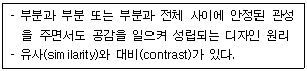
- 통일
- 변화
- 균형
- 조화
(정답률: 79%)
8. 다음 중 디자인의 율동감을 더욱 강조할 수 있는 요소가 아닌 것은?
- 반복
- 점이
- 강조
- 착시
(정답률: 76%)
9. 다음 중 식욕을 돋궈주는 색은?
- 검정
- 주황
- 회색
- 파랑
(정답률: 97%)
10. 컬러TV, 조명등에 활용되는 혼합방식은?
- 감산혼합
- 가산혼합
- 계시가법혼합
- 중간혼합
(정답률: 78%)
11. 다음 설명에 해당하는 것은?
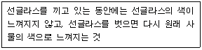
- 색순응
- 명순응
- 명시성
- 채색성
(정답률: 76%)
12. 디자인 요소 중 길이와 방향만을 나타내는 것은?
- 점
- 선
- 면
- 입체
(정답률: 91%)
13. 인간이 볼 수 있는 가시광선의 파장 범위는?
- 380nm~780nm
- 850nm~1100nm
- 1150nm~1400nm
- 1450nm~1650nm
(정답률: 92%)
14. 색광 혼합의 3원색이 아닌 것은?
- 빨강(RED)
- 파랑(BLUE)
- 녹색(GREEN)
- 노랑(YELLOW)
(정답률: 83%)
15. 다음 중 색채 계획상 유의할 점으로 거리가 가장 먼 것은?
- 안정성
- 사회성
- 심미성
- 도덕성
(정답률: 89%)
16. 물체의 표면이 가지고 있는 특징의 차이를 시각과 촉각을 통하여 느낄 수 있는 성질을 의미하는 것은?
- 색감
- 항상성
- 고유성
- 질감
(정답률: 90%)
17. 색의 3속성을 3차원의 공간 속에 계통적으로 배열한 것을 무엇이라 하는가?
- 계시입체
- 표색계
- 색상환
- 색입체
(정답률: 61%)
18. 다음 중 디자인과 관계된 용어 해설이 잘못된 것은?
- 방향(direction) : 한정된 공간 안에서 형태들의 위치나 정렬에 의해 나타나는 시각적 동세
- 율동(rhythm) : 한 개나 또는 그 이상의 요소가 서로 상반되게 배치됨으로써 나타나는 상황
- 반복(repetition) : 시각적 형식 안에서 하나 또는 그 이상의 요소가 계속적으로 되풀이 되는 것
- 비대칭(asymmetry) : 상대적으로 양쪽이 서로 같지 않은 상태나 정렬
(정답률: 82%)
19. 빛이 눈의 망막 위에서 해석되는 과정에서 혼색효과를 가져다주는 가법혼색으로 점묘파 화가들이 많이 사용하였고, 디더링의 혼색원리이기도 한 혼합방법을 무엇이라 하는가?
- 병치혼합
- 감색혼합
- 중간혼합
- 회전혼합
(정답률: 84%)
20. 다음 중 시각 디자인의 분류가 아닌 것은?
- 광고 디자인
- 포스터 디자인
- 실내 디자인
- 잡지 디자인
(정답률: 88%)
2과목: 인터넷 일반
21. 기존의 단어중심 검색방법과는 달리 문장 단위로 검색함으로써 좀 더 정확도를 높이는 검색방법은?
- 키워드 검색
- 자연어 검색
- 이미지 검색
- 색인 검색
(정답률: 61%)
22. 다음 중 윈도즈 기반의 웹 브라우저가 아닌 것은?
- Samba
- Internet Explorer
- Netscape Navigator
- Mosaic
(정답률: 64%)
23. 다음 중 인터넷의 활용에 대한 기능으로 그 성격이 다른 것은?
- FTP
- Telnet
- IRC
(정답률: 56%)
24. 다음 중 HTML 문서의 주석문 태그는?
- <?-- 주석 ??->
- <!-- 주석 -->
- <*-- 주석 -?
- <&-- 주석 -->
(정답률: 86%)
25. 다음 중 해커들이 해킹할 때 가장 많이 사용하는 인터넷서비스는?
- TELNET
- FTP
- E?MAIL
- GOPHER
(정답률: 60%)
26. 자바스크립트 변수의 정의에 대한 설명으로 틀린 것은?
- 대·소문자를 구분한다.
- 특수 기호 사용이 가능하다.
- 예약어는 변수로 사용할 수 없다.
- 반드시 영문자나 언더바(_)로 시작한다.
(정답률: 62%)
27. 다음 중 HTML 문서에 삽입되는 자바 프로그램으로 게임 혹은 대화형 페이지를 만드는데 효과적으로 사용될 수 있는 것은?
- 컨트롤
- 컴포넌트
- 클래스
- 애플릿
(정답률: 67%)
28. 다양한 형태의 네트워크에 연결된 어떤 컴퓨터라도 다른 컴퓨터와 상호 통신을 할 수 있도록 하며, 인터넷의 기본 프로토콜(protocol)로 발전한 것은 무엇인가?
- FDDI
- SSU/TU
- TCP/IP
- ARPNET
(정답률: 91%)
29. 다음 링크 관련 태그 중 하나의 문서에서 다른 문서로 연결할 때나 자신의 이메일 주소와 연결할 때 사용하는 태그로 옳은 것은?
- <L>
- <C>
- <TR>
- <A>
(정답률: 66%)
30. 전자우편(e?mail)에 대한 설명으로 틀린 것은?
- 컴퓨터 통신망을 통하여 다른 사람에게 서신을 교환하는 것을 의미한다.
- 컴퓨터로 작성된 서신은 매우 빠르게 여러 사람에게 동시에 전송할 수 있다.
- 작성된 서신과 함께 각종 디지털 정보를 함께 보낼 수 있다.
- 메일을 보낼 때 사용하는 일반적인 프로토콜은 FTP이고, 받을 때 사용되는 프로토콜은 POP1을 가장 많이 사용된다.
(정답률: 91%)
31. 일반적인 웹 브라우저의 기능으로 옳지 않은 것은?
- 웹 페이지의 저장 및 인쇄
- 최근 방문한 URL의 목록제공
- 소스 파일 보기
- 멀티미디어를 이용한 홈페이지 제작
(정답률: 84%)
32. 다음 중 인터넷 익스플로러에서 자주 방문하는 사이트의 URL을 등록해 놓는 기능은?
- 검색
- 기록
- 즐겨찾기
- 새로 고침
(정답률: 89%)
33. 다음이 설명하고 있는 것은?
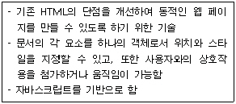
- CSS
- CGI
- DHTML
- XML
(정답률: 80%)
34. 다음은 무엇에 대한 설명인가?
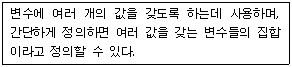
- 이벤트핸들러
- 배열
- 단항연산자
- 예약어
(정답률: 57%)
35. 인터넷에서 접근 가능한 여러 가지 자원들을 획득하기 위해 이들의 위치를 표시하는 주소형식을 무엇이라 하는가?
- HTML
- URL
- DNS
- XML
(정답률: 77%)
36. 인터넷 프로토콜인 TCP와 UDP에 대한 설명으로 틀린 것은?
- TCP는 연결형 프로토콜이다.
- UDP는 비연결형 프로토콜이다.
- TCP는 주로 안정성 있는 전송 매체를 사용하여 데이터를 빠르게 전송해야 하는 환경에서 사용된다.
- UDP는 전송 데이터에 대한 전송 확인이나 신뢰성에 대한 고려가 없다.
(정답률: 46%)
37. 다음 설명에 해당하는 것은?
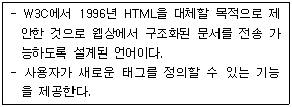
- CSS
- DHTML
- SOAP
- XML
(정답률: 58%)
38. 다음 여러 검색엔진에서 연산자 “*”가 검색 결과에 주는 영향이 다른 하나는?
- 구글 : 인터넷*
- 네이버 : 인터넷*
- 알타비스타 : 인터넷*
- 야후 : 인터넷*
(정답률: 63%)
39. 홈페이지를 제작할 때 고려해야 할 사항으로 옳지 않은 것은?
- 웹에디터는 사용하기 쉽고 풍부한 기능을 가진 것이 좋다.
- 인트로(intro)는 어느 홈페이지든지 반드시 있어야 한다.
- 멀티미디어 요소들을 적절히 활용하면 정보를 전달하는데 훨씬 효과적이다.
- 도메인 명은 해당 홈페이지를 소유한 기관의 특성을 잘 나타내도록 만들어야 한다.
(정답률: 83%)
40. OSI 7계층에 해당하지 않는 것은?
- 물리 계층
- 데이터 링크 계층
- 네트워크 계층
- 인터페이스 계층
(정답률: 79%)
3과목: 웹그래픽스 디자인
41. 다음 중 벡터기반의 그래픽 툴(tool)은?
- 포토샵
- 일러스트레이터
- 페인터
- 페인트샵 프로
(정답률: 79%)
42. 웹상에서 사용되는 파일 포맷 중 GIF와 JPEG의 장점을 합친 형태로 GIF와는 달리 투명도 자체를 조절할 수 있는 특징을 가진 것은?
- AI
- PNG
- PSD
(정답률: 81%)
43. 웹페이지 작성시 레이아웃을 디자인할 때 부적합한 사항으로 옳은 것은?
- 단순하고 간결하며, 사용자가 쉽게 콘텐츠를 찾을 수 있도록 구성한다.
- 콘텐츠의 연결이 일관성 있고 논리적이어야 한다.
- 세부 콘텐츠를 먼저 배치한 후에 중요한 콘텐츠를 배치한다.
- 텍스트와 그래픽 요소를 적절히 조화시킨다.
(정답률: 81%)
44. 다음 중 웹사이트 디자인 프로세스의 순서를 옳게 나열한 것은?
- 사이트 맵 그리기→기본디자인 구상하기→컨셉 정하기→세부디자인 구상하기
- 사이트 맵 그리기→컨셉 정하기→기본디자인 구상하기→세부디자인 구상하기
- 컨셉 정하기→기본디자인 구상하기→세부디자인 구상하기→사이트 맵 그리기
- 컨셉 정하기→사이트 맵 그리기→기본디자인 구상하기→세부디자인 구상하기
(정답률: 52%)
45. 다음 ( )안에 공통으로 들어갈 알맞은 용어는?
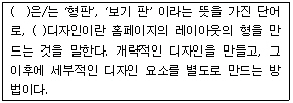
- 텍스트(text)
- 템플릿(Template)
- 컬러(Color)
- 인터페이스(Interface)
(정답률: 78%)
46. 다음 설명에 해당하는 3차원 모델링 방법은?
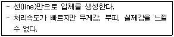
- 와이어 프레임 모델(Wire-frame model)
- 서페이스 모델(Surface model)
- 솔리드 모델(Solid model)
- 파라메트릭 모델(Parametric model)
(정답률: 83%)
47. 1946년 미국의 “에커드”와 “모클리”에 의해 개발된 세계 최초의 컴퓨터는?
- 애플
- 맥킨토시
- 에니악
- IBM
(정답률: 88%)
48. 다음 중 통신을 위한 그래픽 파일 포맷으로 자체 압축과 해독 효율이 높고 8비트 이미지파일 형식으로 가장 사용 빈도가 높은 것은?
- GIF
- PNG
- TIFF
- EPS
(정답률: 73%)
49. 픽셀(pixel)에 대한 설명 중 잘못 된 것은?
- Picture와 element의 합성어이다.
- 디지털 이미지의 최소단위이다.
- 이미지에서 한 픽셀의 위치정보는 직교좌표계의 x, y 좌표 값으로 표시한다.
- 각 픽셀은 색심도(color depth)가 클수록 적은 색상을 표현하게 된다.
(정답률: 78%)
50. 그래픽 편집 프로그램에 대한 설명으로 옳지 않은 것은?
- 컴퓨터상에 그림이나 문자, 도형 등을 편집할 수 있는 프로그램이다.
- 도안 작업, 페인팅, 리터칭을 가하여 합성을 하는 프로그램이 해당된다.
- 대표적인 프로그램으로는 포토샵, 페인터, 일러스트레이터, 코렐드로우가 있다.
- 건축, 인테리어의 3D 이미지와 방송용 영상만을 제작하는 프로그램이다.
(정답률: 89%)
51. 케스케이딩 스타일 시트(Cascading Style Sheet)에 대한 설명 중 틀린 것은?
- HTML 요소의 기능을 확장한다.
- 통일된 문서 양식을 디자인 할 수 있다.
- 문서의 형식을 다양하게 구성할 수 있다.
- 다양한 이미지의 디자인 편집을 할 수 있다.
(정답률: 57%)
52. 다음과 같이 웹 페이지를 작성할 경우 나타날 수 없는 파일 포맷 형식은?
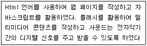
- *.midi
- *.htm
- *.swf
(정답률: 53%)
53. 웹 사이트 기획시 좋은 정보구조 설계를 위해 고려해야 할 사항으로 옳지 않은 것은?
- 정보의 양
- 정보의 상하관계
- 정보의 일관성
- 정보의 모호성
(정답률: 75%)
54. 컴퓨터 그래픽스 시스템 중 운영체제(Operating- System)에 대한 설명으로 가장 옳은 것은?
- 하드웨어와 응용프로그램 사이에 위치하여 전체적인 시스템 자원을 관리한다.
- 컴퓨터를 구성하는 모든 장치들이 원하는 대로 작동되도록 하는 장치이다.
- 미디어처리장치와 입·출력장치, 그리고 정보를 저장하는 저장장치로 구별할 수 있다.
- 컴퓨터가 인식하고 데이터를 처리할 수 있도록 외부정보를 이진부호로 바꿔 준다.
(정답률: 50%)
55. 다음 중 웹 페이지를 디자인 하는 과정에서 가장 먼저 해야 되는 것은?
- 스토리보드 작성
- 문서화
- 레이아웃 설계
- 홍보 및 마케팅
(정답률: 33%)
56. 웹디자인에 사용하기 위하여 사진이나 그림 등을 스캔 받을 때 나타나는 현상으로 스캔 받은 이미지에 물결무늬가 격자처럼 교차 되어 보이는 것을 무엇이라고 하는가?
- Dithering
- Scanning
- Moire
- Water Mark
(정답률: 55%)
57. 웹 페이지 내에 애니메이션 장면이나 움직이는 이미지 광고를 삽입하고자 할 때 사용할 프로그램으로 거리가 먼 것은?
- FLASH
- IMAGE READY
- DIRECTOR
- PHOTOSHOP
(정답률: 70%)
58. 3차원 대상물 표면에 2차원의 이미지를 입히는 과정을 무엇이라고 하는가?
- 쉐이딩(Shading)
- 안티 앨리아싱(Anti Aliasing)
- 텍스처 매핑(Texture Mapping)
- 필터링(Filtering)
(정답률: 64%)
59. 다음이 설명하고 있는 웹 그래픽 제작 소프트웨어의 기능으로 옳은 것은?
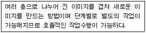
- 레이어
- 레벨
- 오브젝트
- 심볼
(정답률: 82%)
60. 다음이 설명하고 있는 것은?
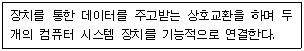
- 오토캐드(Autocad)
- 포토샵(Photoshop)
- 레이아웃(Layout)
- 인터페이스(Interface)
(정답률: 81%)